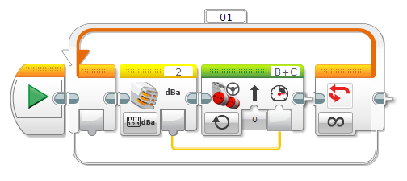

					<table cellpadding="0" cellspacing="0" border="0"><tbody><tr><td>
	
						<h1>使用 NXT 声音传感器<a name="top"></a></h1>
		<div id="block_1266" class="block blockHeader">
				<div class="description">NXT 声音传感器使用传感器正面的麦克风测量声音的强度（音量）。例如，可以使用声音传感器使机器人对较大的声音（如拍手）作出反应。</div>
			</div>
	<div id="block_1267" class="block blockChaptor">
		<div class="title"><a name="SoundSensorData" style="position:relative; top:-10px;"></a>声音传感器数据</div>
		<div class="description">声音传感器可以提供以下数据：</div>
	</div>
	<div id="block_1268" class="block blockTable ">
		<table class="blockTable">
		

			<tbody><tr>
<th>数据</th><th>类型</th><th>范围</th><th>备注</th>			</tr>
<tr><td>音级 (dB) <a name="SoundLevel" style="position:relative; top:-10px;"></a></td><td>数字</td><td>0 至 100</td><td>音级，缩放为百分比比例 (0-100%)</td></tr><tr><td>音级 (dBA) <a name="SoundLevel" style="position:relative; top:-10px;"></a></td><td>数字</td><td>0 至 100</td><td>音级，调整为近似于人耳灵敏度，然后缩放为百分比比例 (0-100%)</td></tr>		</tbody></table>
	</div>
	<div id="block_1269" class="block blockStep">
		<div class="title"></div>
		<div class="description">音级 (dBA) 值调整为近似于人耳对不同频率的灵敏度。这表示传感器听到、但是您难以听到的声音频率不会生成较高音级值。</div>
	</div>
	<div id="block_1270" class="block blockTip">
		<div class="title">提示和技巧</div>
		<div class="boxContent">
			<div class="description"></div>
			<div id="block_1272" class="block blockTable bullets">
		<table class="blockTable">
		
<tbody><tr><td></td><td>安静的声音和正常谈话生成的音级通常小于 50%。拍手或较大声音生成的音级通常大于 50%。 </td></tr>		</tbody></table>
	</div>
		</div>
	</div>
	<div id="block_1273" class="block blockChaptor">
		<div class="title"><a name="ExamplesUsingTheSoundSensor" style="position:relative; top:-10px;"></a>声音传感器使用示例</div>
		<div class="description">下面演示了有关在程序中如何使用 NXT 声音传感器的一些示例。</div>
	</div>
	<div id="block_1274" class="block blockExample">
		<div class="title">示例 1：通过拍手启动机器人</div>
		<div class="image"></div>
		<div class="description">此程序在您拍手时使机器人开始驱动。它使用“声音传感器 － 比较 － dB”模式的<a href="./index.html?id=Wait">等待</a>模块等到音级上升到高于 50%。</div>
	</div>
	<div id="block_1275" class="block blockExample">
		<div class="title">示例 2：声音控制的速度</div>
		<div class="image"></div>
		<div class="description">此程序使机器人向前驱动，通过音级来控制机器人的速度。对机器人喊叫的声音越大，其驱动速度越快！此程序使用“测量 － dBA”模式的 <a href="./index.html?id=SoundSensor">NXT 声音传感器</a>模块通过数字数据线获取音级。结果会连线到<a href="./index.html?id=Move">移动转向</a>模块的“功率”输入，以便使音级控制电机功率。该过程在<a href="./index.html?id=LoopCondition">循环</a>中重复执行，以便基于新声音读数持续调整电机功率。</div>
	</div>
	<div id="block_1276" class="block blockChaptor">
		<div class="title"><a name="BlocksThatCanUseTheSoundSensor" style="position:relative; top:-10px;"></a>可以使用声音传感器的模块</div>
		<div class="description">下表列出可以与 NXT 声音传感器一起使用的不同编程模块。每个模块对于该传感器提供的 dB 和 dBA 数据都具有不同模式。</div>
	</div>
	<div id="block_1277" class="block blockTable ">
		<table class="blockTable">
		

			<tbody><tr>
<th>模块</th><th>模式</th><th>用途</th>			</tr>
<tr><td><a href="./index.html?id=Wait">等待</a> <a name="Mode_WaitSoundSensorcomparedB" style="position:relative; top:-10px;"></a>  <a name="Mode_WaitSoundSensorcomparedBa" style="position:relative; top:-10px;"></a></td><td>声音传感器 － 比较</td><td>等待音级达到特定值。</td></tr><tr><td><a href="./index.html?id=Wait">等待</a></td><td>声音传感器 － 更改</td><td>等待音级按特定量更改。</td></tr><tr><td><a href="./index.html?id=LoopCondition">循环</a> <a name="Mode_LoopSoundSensorcomparedB" style="position:relative; top:-10px;"></a>  <a name="Mode_LoopSoundSensorcomparedBa" style="position:relative; top:-10px;"></a></td><td>声音传感器</td><td>重复模块序列，直至音级达到特定值。</td></tr><tr><td><a href="./index.html?id=CaseSelector">切换</a> <a name="Mode_SwitchSoundSensorcomparedBa" style="position:relative; top:-10px;"></a>  <a name="Mode_SwitchSoundSensorcomparedB" style="position:relative; top:-10px;"></a></td><td>声音传感器</td><td>根据音级在两个模块序列之间进行选择。</td></tr><tr><td><a href="./index.html?id=SoundSensor">NXT 声音传感器</a></td><td>测量</td><td>测量音级并通过数字数据线获取结果。</td></tr><tr><td><a href="./index.html?id=SoundSensor">NXT 声音传感器</a></td><td>比较</td><td>将音级与阈值进行比较，并通过逻辑数据线获取结果。</td></tr><tr><td>数据日志</td><td></td><td>请参见“数据日志”。</td></tr>		</tbody></table>
	</div>
	
			<div id="quick">
				<div class="header"><a href="./index.html?id=UsingSensors_SoundSensor#header">NXT 声音</a></div>
					<div class="quickText">快速链接</div>
					
					<ul>
	<li><a href="./index.html?id=UsingSensors_SoundSensor#SoundSensorData">声音传感器数据</a></li><li><a href="./index.html?id=UsingSensors_SoundSensor#ExamplesUsingTheSoundSensor">声音传感器使用示例</a></li><li><a href="./index.html?id=UsingSensors_SoundSensor#BlocksThatCanUseTheSoundSensor">可以使用声音传感器的模块</a></li>					</ul>
			</div>
	
	</td></tr></tbody></table>